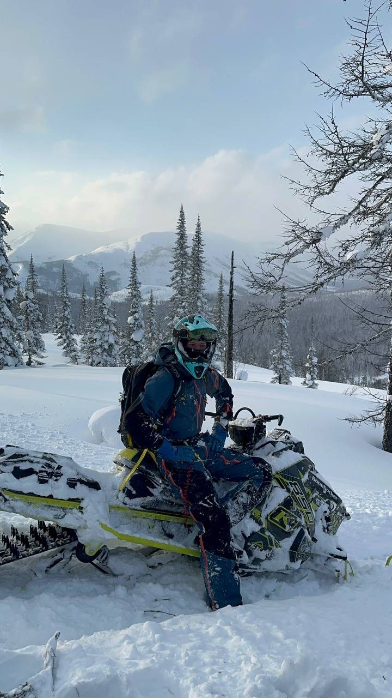

Почему Даван считают легендарным местом?
Даван — это легенда.
Та самая крутая дорога-серпантин между горами, где у меня всегда перехватывает дыхание, не только от высоты. Зимой там просто космос! Останавливаешься на самом верху, выходишь из машины — и всё, ты немеешь. Высота перевала Даван составляет около 1300 метров над уровнем моря.
Белоснежные пики куда хватает глаз. Кажется, что весь мир лежит у твоих ног, и видно буквально на край света. Сюда люди едут не для галочки. Сюда едут, чтобы по-настоящему зарядиться силой этого места.
Постоять, помолчать, вдохнуть этот морозный воздух полной грудью и почувствовать, насколько же Сибирь мощная и великая.
Ну а это те самые сибирские морозы, которые творят чудеса.
Это ж не просто холод, это самый настоящий художник! Бывало, выйдешь утром после ночного минус сорока — а там такое! Иней опудрил каждую веточку, каждую иголку на елках. Настоящая ледяная сказка.
Весь лес стоит хрустальный, сказочный, и тихонько звенит, если ветерок подует. Фоткаешь, а на фото просто белое пятно, вся эта магия и объем не передаются. Нужно просто видеть своими глазами.
И главное — это чудо мимолетное. Чуть солнце пригреет — и всё, иней осыплется, сказка закончится.
А это самое ценное — наша компания.
вернуться назад